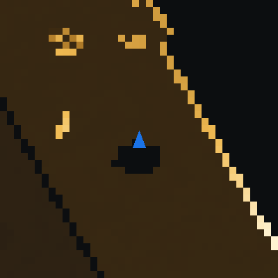
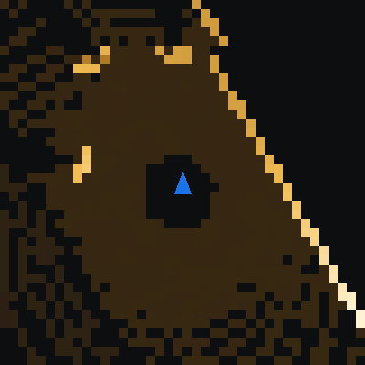
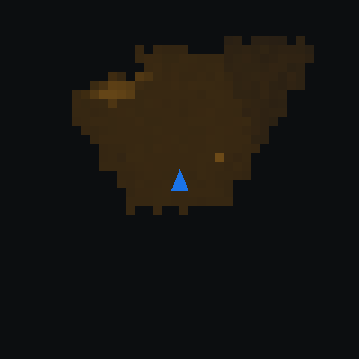

Abstract
We study goal-directed navigation of a Unitree G1 humanoid in dense urban pedestrian environments. We construct a procedurally generated suite of New York City street scenarios (sidewalks, sidewalk sheds, crosswalks, construction zones, doorways and pedestrian plazas) at ten difficulty levels, populated by pedestrians that follow a social-force model in which some pedestrians react to the robot only at close range. Control is hierarchical: a locomotion policy trained with the actuator limits of the physical robot tracks velocity commands at 50 Hz, and a navigation policy issues these commands at 10 Hz through a tanh mapping and a low-pass filter. A navigation teacher with privileged state is trained with PPO under a success-based curriculum and distilled into student policies that observe only the robot's onboard sensors (Livox MID-360 lidar or Intel RealSense D435i depth camera) through height maps accumulated over 3 s. Over all 120 scenario tiles, the teacher reaches the goal in 64.6% of episodes, the lidar student in 65.9% and the camera student in 64.8%, with pedestrian contact in 11% and falls in at most 0.3% of episodes; entering the roadway outside a crosswalk ends an episode as a failure. The locomotion policy is trained with randomized payload, motor strength, latency, friction and sensor biases and with a penalty on sustained drift: under a straight command at 0.9 m/s its lateral offset after 3 s decreases from 0.40 m to 0.17 m, and its falls with all degradations combined decrease tenfold. Success is lowest on narrow walkways with two-way foot traffic (0–26% on hard sidewalk, sidewalk-shed and construction tiles). All experiments are conducted in simulation (Isaac Lab 3.0, Isaac Sim 6.1).
Video
Method
The navigation policy outputs a velocity command (forward velocity, lateral velocity and yaw rate) at 10 Hz. The output is mapped into the command ranges by a tanh (forward −0.4 to 1.0 m/s, lateral ±0.15 m/s, yaw rate ±1.0 rad/s) and low-pass filtered: at each step the command moves halfway to the requested value. A frozen locomotion policy converts the command into joint position targets for the 37 joints of the G1 at 50 Hz, which are tracked by PD controllers; the simulator runs at 200 Hz. The teacher observes privileged simulator state. Student policies observe proprioception, the goal position and one onboard sensor, and are trained to reproduce the teacher's commands.

Training proceeds in three stages; each stage is frozen before the next is trained (Figure 4, Table 1). The locomotion policy is blind: it observes only what the robot measures (IMU angular velocity and gravity direction, joint positions and velocities), its previous action, the command and a gait clock, with sensor noise, sensor biases drawn per episode (IMU mounting, gyroscope, encoder offsets), 0–20 ms of latency and a history of 5 control steps; its critic also observes the base velocity and the terrain height. Leg and ankle joints are explicit PD controllers at the gains used on the robot (hip 100, knee 150, ankle 40 Nm/rad), with the motors' torque and speed limits and 0–20 ms of actuation latency. Friction (0.3–1.2), a torso payload (−1 to +5 kg), center of mass, link masses, PD gains, torque limits (80–100% of rated), joint friction and armature are randomized, and the robot is pushed every 4–8 s. It is trained on curbs and steps up to 20 cm, sills, potholes, broken pavement, cobblestones and ramps, with rewards for velocity tracking, gait timing and posture and penalties on mechanical power, foot impacts, stumbling against edges, changes of the joint targets and drift (lateral-velocity and yaw-rate errors low-pass filtered over 1 s). It is trained for 10,000 iterations with narrower randomization and without the drift penalty, then for 8,000 iterations with these settings, and for 3,000 more with the ground friction set to 0.1 and combined by maximum: MuJoCo-Warp uses the larger friction coefficient of a contact, so with the default ground friction of 1.0 the friction randomization had no effect in the earlier stages. The teacher is trained with PPO on the scenario suite under an adaptive curriculum, initialized from an earlier teacher whose output layer is scaled by 0.3, in stages that are each warm-started from the previous one: the collision-risk reward (Table 2) is added at iteration 2,050 and the path-based pedestrian model at 3,250; at 4,250 the roadway termination, the curb and personal-space margins and the lateral command range of ±0.15 m/s; at 6,250 the social-speed reward; at 8,750 the structure margin and speed terms, a discount factor of 0.995 (a 20 s horizon at 10 Hz, previously 0.99) and the final locomotion policy; at 9,300 the present roadway and curb weights; at 10,600 the present curriculum thresholds; and at 11,850 the locomotion policy trained with the corrected friction (12,650 iterations in total). The students are trained by distillation from the teacher.
The curriculum keeps an exponential moving average of the success rate on each tile. A level is unlocked once the next-easier level of the same tile column reaches 35% success (50% before teacher iteration 10,600; under the rules of Table 2 several mid-level tiles stayed below 50%, which locked all harder levels of their column). When an episode ends, the robot's next tile is drawn with a uniformly random scenario type and a level drawn from the unlocked levels with probability proportional to s(1 − s) + 0.02, where s is the tile's success rate; this concentrates training on levels the policy solves about half of the time. A fifth of the draws are uniform over the unlocked levels and 15% uniform over all levels. During distillation the curriculum follows the student's success rate.

| Locomotion policy | Teacher | Students | |
|---|---|---|---|
| Algorithm | PPO | PPO | Distillation (MSE of tanh-mapped actions) |
| Simulator | Newton (MuJoCo-Warp) | Isaac Sim PhysX | Isaac Sim PhysX |
| Policy rate | 50 Hz | 10 Hz | 10 Hz |
| Parallel robots | 16,384 | 8,192 | 8,192 |
| Rollout length | 24 | 32 | 32 |
| Iterations | 10,000 + 8,000 + 3,000 | 12,650 (9 stages) | 1,500 + 600 + 1,000 |
| Entropy coefficient | 0.008 | 0.001 | – |
| Network | MLP 512-256-128 | MLP 512-256-128 | CNN 16-32-32 per image input, MLP 512-256-128 |
| Hardware, time | 4 GPUs, 1.9 h + 2.2 h | 4 GPUs, 21.6 h | 4 GPUs shared by both students, 12.5 h |
Environment
The terrain is a grid of 16 m × 10 m tiles. Columns correspond to the six scenario types and rows to ten difficulty levels. In each episode the robot is placed at one end of a route on its tile and must reach the other end within 40 s.
Pedestrian model
- Dynamics. Pedestrians are kinematic bodies that follow walking paths under a social-force model with repulsion from other pedestrians and from structures. Walking speeds are drawn from 0.7–1.3 m/s at level 1 and 0.8–1.6 m/s at level 10; 10% walk at 0.4–0.6 m/s.
- Encounters. 65% of walking pedestrians are timed to reach the robot's route when the robot does (assuming 0.8 m/s), so that pedestrians cross and block the route. The number of pedestrians increases with difficulty, up to 20 on plaza tiles.
- Awareness. A fraction of pedestrians (90% at level 1, 60% at level 10) perceive the robot: they keep a clearance of at least 0.1 m, slow down when the robot blocks their path and step around it. The resulting loss of pedestrian speed is penalized, which rewards yielding.
- Distracted pedestrians. The remaining pedestrians do not slow down and react only within 1 m with a lateral swerve.
- Entering and leaving. Each walking path leads from where people enter the scene, 45 m beyond the tile's ends, out of a shop door or up a subway stairwell, to 45 m beyond the tile's ends, so pedestrians do not appear or disappear in view. Walkers that have left re-enter on a new path. A walker is never pushed backwards along its path; it may slow down, stop or step sideways.
- Other behaviors. Stationary pedestrians at waiting spots (curbs, doorways, work zones) start walking after 5–25 s. No pedestrian is spawned within 1.5 m of the robot.
- Feasibility. A unit test verifies that every route admits a path of width 0.6 m on every tile type at difficulties 0, 0.5, 0.8 and 1.
| Term | Definition | Weight |
|---|---|---|
| Progress | Reduction of distance to the goal per second, clipped to ±1.0 m/s | 2.0 |
| Goal reached | Within 0.5 m of the goal (terminates) | 100 |
| Pedestrian contact | Robot footprint (radius 0.25 m) intersects a pedestrian (radius 0.25 m) (terminates) | −200 |
| Obstacle contact | Robot footprint intersects a structure (terminates) | −150 |
| Fall | Torso contact with the ground (terminates) | −200 |
| Roadway | Robot enters the roadway outside a crosswalk (terminates) | −150 |
| Social speed | Planar speed above 0.3 m/s within 0.3 m of a pedestrian, rising linearly to 1.0 m/s at 1.5 m (m/s) | −6 |
| Personal space | Penetration of a 0.8 m clearance to the nearest pedestrian (m) | −6 |
| Collision risk | Predicted close passes within 2 s under constant relative velocity: (1 − d/0.8 m)(1 − t/2 s) per pedestrian, with t and d the time and center distance of closest approach | −4 |
| Obstacle margin | Penetration of a 0.3 m margin to the nearest structure (m) | −10 |
| Obstacle speed | Planar speed above 0.4 m/s within 0.1 m of a structure, rising linearly to 1.0 m/s at 0.4 m (m/s) | −2 |
| Pedestrian delay | Total speed lost by pedestrians slowing for the robot (m/s) | −1 |
| Curb margin | Penetration of a 0.3 m margin to the roadway (m) | −10 |
| Command rate | Squared change of the velocity command between control steps | −2.0 |
| Lateral command | Squared lateral velocity command | −1.5 |
| Backward command | Squared negative part of the forward velocity command | −2.0 |
| Yaw-rate command | Squared yaw-rate command | −0.15 |
| Policy output | Squared norm of the policy output before the tanh | −0.01 |
Sensing
The student policies use only the sensors installed on the G1, at the poses given in the robot's URDF. The MID-360 is mounted inverted in the head, about 1.1 m above the ground, with a vertical field of view of −52° to +7°; it is simulated with 32 channels at 1° horizontal resolution and a 10 m range. The D435i is pitched 47.6° downward.
Each student receives a height map built from its sensor's returns (Figure 9). Returns are binned into a world-aligned grid that moves with the robot; the robot's motion between scans is taken from the simulator with a random-walk error (5 mm and 0.002 rad per control step), in place of lidar-inertial or visual-inertial odometry. A cell holds the highest return of its latest observation and is cleared 3 s after it was last observed. The policy receives this accumulated map together with the current and the previous scan, resampled into the robot's heading frame; the camera student additionally receives the last three depth images.

(a) Lidar: accumulated map

(b) Lidar: current scan

(c) Camera: depth image, 64 × 38

(d) Camera: accumulated map
Results
All navigation policies are evaluated with the curriculum disabled and robots distributed uniformly over all 120 tiles (2,400 robots, 60 s of simulated time, PhysX, sensor noise on); random pushes are disabled. An episode ends at the goal, at the first contact with a pedestrian or a structure, when the robot enters the roadway outside a crosswalk, on a fall, or after 40 s.
Show values as a table
| Outcome | Teacher | Lidar student | Camera student |
|---|---|---|---|
| Goal reached | 64.6% | 65.9% | 64.8% |
| Pedestrian contact | 11.2% | 11.1% | 11.2% |
| Obstacle contact | 18.1% | 18.4% | 19.4% |
| Roadway (left the sidewalk or crosswalk) | 3.4% | 1.3% | 1.9% |
| Fall | 0.31% | 0.10% | 0.14% |
| Time-out (40 s) | 2.3% | 3.2% | 2.6% |
| Mean time to goal (successful episodes) | 16.7 s | 16.7 s | 16.7 s |
| Time within 0.5 m of a pedestrian | 6.6% | 7.9% | 8.6% |
| Completed episodes | 8,375 | 8,165 | 8,376 |
The students reach the teacher's success rate (65.9% and 64.8% against 64.6%) and leave the roadway less often (1.3% and 1.9% against 3.4%), at the cost of more time-outs. Success is 88–99% on easy tiles of every type except construction zones (74–80%) and falls to 0–26% on the hard sidewalk, sidewalk-shed and construction tiles, where walkways of about 1.0–1.8 m carry two-way foot traffic: the robot either waits for a gap that does not come within 40 s (up to 42% time-outs on hard construction tiles) or touches the structures while giving way (Figure 10). The previous release reached 74.9% (teacher) and 69% (students) with lateral commands up to ±0.4 m/s, a per-step roadway penalty in place of the roadway termination, a locomotion policy trained in effect on friction of at least 1.0, and without the margins and speed limits of Table 2; its pedestrian contact rates were 16–20%, against 11% here, and the robots spent 13–16% of the time within 0.5 m of a pedestrian, against 7–9%.
Failure analysis. For a teacher trained under most of the rules of Table 2 (iteration 8,750, 59.7% success), the robot's state was recorded at every episode end. Contacts with structures were mostly with a structure beside the robot (56–99% of them, depending on the tile type), at 0.7–1.0 m/s and without a pedestrian within 0.3 m in 87–100% of the cases, and the robot's velocity typically pointed 10–20° further towards the structure than its heading. Under a constant straight command, the locomotion policy of that time drifted sideways by 0.08–0.10 m/s, about 0.4 m within 3 s at 0.9 m/s (Table 6), a large part of the 1.0–1.5 m walkways of hard tiles. Pedestrian contacts also happened at walking speed (median 0.87 m/s), and 21% of them within 2 s of the episode start, from pedestrians that started 1–2 m from the robot walking towards it. The changes that followed are the drift penalty and the friction correction of the locomotion policy; the structure margin and speed terms, the stronger social-speed term, the 20 s discount horizon and roadway penalties no smaller than the structure penalties for the teacher (Table 2); and the spawn rule for pedestrians. With them, success increased from 59.7% to 64.6%, pedestrian contacts decreased from 15.3% to 11.2% and structure contacts from 20.1% to 18.1%, and the mean planar speed decreased from 0.77 to 0.66 m/s.
| Quantity | Teacher, clamped commands | Teacher | Lidar student | Camera student |
|---|---|---|---|---|
| Forward command (m/s) | 1.15 | 0.68 | 0.66 | 0.67 |
| |Lateral command| (m/s) | 0.57 | 0.08 | 0.06 | 0.05 |
| Time with |lateral command| > 0.25 m/s | 96.3% | 0.0% | 0.0% | 0.0% |
| |Yaw-rate command| (rad/s) | 0.51 | 0.24 | 0.18 | 0.17 |
| Time with |yaw-rate command| > 0.8 rad/s | 25.1% | 3.7% | 0.4% | 0.2% |
| Requested command at a range limit | 68.5% | 12.0% | 1.2% | 1.0% |
| Yaw-rate command change (rad/s²) | 3.11 | 1.01 | 0.52 | 0.49 |
| Planar speed (m/s) | 1.10 | 0.66 | 0.63 | 0.64 |
| Torso tilt | 3.7° | 3.3° | 3.1° | 3.1° |
| Knee flexion | 41.3° | 36.1° | 35.5° | 35.7° |
The earlier teacher commands lateral velocities above 0.25 m/s 96% of the time and requests a range limit 69% of the time, so the robot moves diagonally at high speed (Figure 11); it also leaves the roadway in 37% of its episodes, as it was trained before the roadway termination. With the tanh mapping, the low-pass filter and the command penalties of Table 2 the final teacher requests a range limit 12% of the time and changes the yaw-rate command three times more slowly; the students' commands change about half as fast again.
(a) Earlier teacher: clamped commands
(b) Final teacher: tanh range, low-pass filter
Mean curriculum level
Success rate at the current curriculum level
| Metric | Walker, Newton | Walker, navigation commands | Walker, PhysX | First stage, Newton | First stage, PhysX |
|---|---|---|---|---|---|
| Forward velocity error (m/s) | 0.094 | 0.091 | 0.100 | 0.115 | 0.118 |
| Lateral velocity error (m/s) | 0.075 | 0.066 | 0.081 | 0.093 | 0.109 |
| Yaw-rate error (rad/s) | 0.145 | 0.140 | 0.167 | 0.185 | 0.206 |
| Torso tilt | 2.8° | 2.7° | 2.8° | 4.1° | 4.1° |
| Knee flexion | 33.1° | 32.2° | 33.5° | 39.2° | 40.3° |
| Pelvis height (m) | 0.716 | 0.717 | 0.716 | 0.705 | 0.703 |
| Leg mechanical power (W) | 93 | 83 | 101 | 95 | 111 |
| Change of joint targets per step (rad) | 0.055 | 0.053 | 0.056 | 0.046 | 0.048 |
| Torso roll and pitch rate (rad/s) | 0.34 | 0.32 | 0.35 | 0.34 | 0.35 |
| Falls in 341 robot-minutes | 10 | 18 | 10 | 43 | 44 |
| Straight command | Lateral drift (m/s) | Lateral offset after 3 s (m) | Heading change after 3 s (rad) |
|---|---|---|---|
| 0.3 m/s | 0.028 (0.083) | 0.06 (0.27) | 0.08 (0.15) |
| 0.6 m/s | 0.042 (0.089) | 0.12 (0.32) | 0.11 (0.17) |
| 0.9 m/s | 0.043 (0.099) | 0.17 (0.40) | 0.15 (0.17) |
| Condition (every robot) | Walker, Newton | Walker, PhysX | First stage, Newton | First stage, PhysX |
|---|---|---|---|---|
| Training randomization | 13 | 10 | 38 | 44 |
| Torso payload +5 kg | 20 | 17 | 52 | 58 |
| Torque limits 80% of rated | 23 | 18 | 45 | 51 |
| Actuation latency 15–25 ms | 15 | 19 | 48 | 34 |
| Friction 0.3 (static) / 0.25 (dynamic) | 110 | 85 | 332 | 367 |
| Twice the sensor noise and biases | 27 | 19 | 242 | 238 |
| All of the above | 210 | 213 | 2,090 | 2,146 |
| Condition | Teacher | Lidar student | Camera student |
|---|---|---|---|
| Nominal (Table 3) | 64.6 / 11.2 / 18.1 / 0.3 | 65.9 / 11.1 / 18.4 / 0.1 | 64.8 / 11.2 / 19.4 / 0.1 |
| Sensors: twice the noise and odometry drift, 0–200 ms height-map latency | – | 65.0 / 11.4 / 19.0 / 0.1 | 63.1 / 13.1 / 17.4 / 0.1 |
| Pedestrians: 20% faster, 30% fewer notice the robot | 56.5 / 21.0 / 17.2 / 0.3 | 56.6 / 23.3 / 16.3 / 0.1 | 54.7 / 24.4 / 17.6 / 0.1 |
| Robot: +5 kg, torque 80%, 15–25 ms actuation latency, friction 0.3 | 55.9 / 11.2 / 20.7 / 4.8 | 57.8 / 12.4 / 21.1 / 3.8 | 57.6 / 12.2 / 21.2 / 3.7 |
Limitations
- All results are in simulation; the policies have not been deployed on hardware.
- Odometry is modeled as the simulated robot motion with a random-walk error, and the students' velocity estimate as the true velocity with noise and a bias per episode; no state estimator is simulated.
- The walker is blind and steps onto curbs without perceiving them; curbs higher than 20 cm are outside its training range.
- On low-friction ground (0.3, e.g. wet paint or steel plates) the walker falls about once every 3–4 robot-minutes under random commands (Table 7).
- Pedestrians are kinematic and scripted; contact ends the episode, and physical interaction between robot and pedestrians is not modeled.
- Success on narrow walkways with two-way foot traffic remains low: 14–19% on hard sidewalk tiles, 20–26% on hard sidewalk-shed tiles and 0–2% on hard construction tiles. Pedestrians stop for the robot but do not back out of a one-person passage.
- Structures of a neighboring tile exist in the simulation but not in a tile's obstacle list; a robot that reaches the edge of an open plaza tile can touch them without the episode ending, which accounts for some of the remaining falls.
- With the default mounting, the D435i observes the ground only up to about 3.4 m ahead, which limits anticipation for a camera-only policy.
Context
This project is part of work toward a civic robot system for the applications of the Center for Smart Streetscapes (CS3), an NSF Engineering Research Center led by Columbia University. It follows earlier work on street-scene perception: SyntheticStreetScenes, a dataset of approximately 5,200 generated street-scene videos with prompts and attributes, and StreetPrompt, a street-camera video classifier with classes specified as text.
BibTeX
@misc{turkcan2026g1patrol,
title = {G1 Patrol: Humanoid Navigation in Dense Urban Pedestrian Environments},
author = {Turkcan, Mehmet Kerem},
year = {2026},
howpublished = {\url{https://github.com/mkturkcan/g1_patrol}}
}